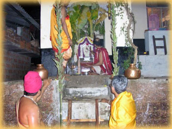

|
SEVA
OFFERINGS AT THE LORD'S FEET
|
|
There are many forms of offerings that can be made to Lord Shri Somanatheshwara at Nellitheertha. The sevas can be in the form of Pooja (worship), Yagna (fire ritual), Bhajane (singing devotional songs) or even just a visit and prayer. The most often conducted sevas and their descriptions are here below. Shatha Rudrabhisheka: This literally means a bath involving 100 pots of water. Our scriptures suggest that Lord Shiva is fond of water. It is because of this fondness that we find river Ganga flowing from Lord Shiva's head. It is said that the easiest way to please Lord Somanatha is to shower him with water. Shatha Rudrabhisheka involves a mix of 100 pot-shower and Mangalarathis amidst the chanting of Rudra Suktha by 11 purohits. At the end, there is a grand Mangalarathi for the Lord. Ekadasha Rudrabhisheka: This is a smaller scale version of the Shatha Rudrabhisheka where 11 pots of water are offered to Lord Shiva followed by a grand Mangalarathi. Ganapati Homa: This is a very famous yagna performed to please Lord Ganapati. The rituals include offering all the favorite eateries of Lord Ganapati consisting of a dish made of sugarcane, jaggery, bananas, black til and ghee. The offerings are placed in the fire itself and is routed through Agni Deva, the God of fire (according to the Vedas, all offerings made through Yagnas are routed through Agni Deva). Ranga Pooja: This is a very special and colorful pooja offered to the Lord. Offerings are placed on wooden racks in front of the Lord and lamps are lit throughout the temple. This is also one of the most ritualistic poojas offered at Nellitheertha. Satyanarayana Pooja: Once every month, on the full moon day, people from the village gather and perform a community Satyanarayana Pooja.This is also a social occasion which lets people get together. Durga Namaskara Pooja: This pooja is very unique to South Kanara and involves worshipping Lord Shri Durga Parameshwari in the form of light. A lamps is placed in the midst of a colorful Rangoli and is decorated with flowers and jewellery. It is a treat to the eyes and is performed often at the temple. Bhoota Nemas: This is also popularly known as Bhoota Kola. It is a dance ritual offered to the Bhootas where a person assumes the role of a particular Bhoota and dances throughout the night trying to please the Bhoota. This is also a very ritualistic seva and is revered throughout South Kanara. Kolas are unique to South Kanara and every temple with either Lord Shiva or Lord Shakti as the deity has this ritual. |
|
Best
Viewed in 800x600 |